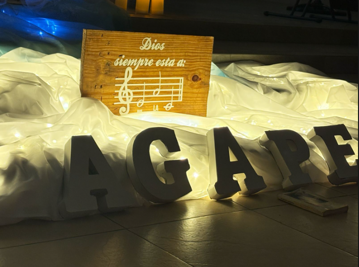

Coro Agape
Nuestro trayecto...
El coro Ágape mostro su luz por primera vez en Abril del 2024.

Inicio siendo una idea para tener un coro juvenil que uniera a
los adolescentes.
Agapé inicio teniendo entre 10 a 15 integrantes, afortunadamente
y con la gracia de
Dios los chicos y chicas se sintieron llamados
al apostolado, teniendo hoy un total de 30 integrantes que participan
activamente.
Al ser un coro creado por adolescentes, coordinado por adolescentes
y integrado por adolescentes es muy activo emocionalmente.
Agapé tiene muchos integrantes y aunque es impresionante, no todos tienen
la oportunidad de asistir a todos los ensayos o misas por temas escolares,
profesionales o sociales, es por eso que se tiene mucha consideración, sin
embargo eso no quita el hecho del compromiso con coro Ágape y con el objetivo
que tenemos, que es adorar a Dios.
Ágape tiene multiples valores que lo identifican, el principal de ellos es el amor
incondiconal que se tiene a Dios y apartir de ahi surgio el respeto, la amistad,
el compromiso, la solidaridad y la empatia.
El camino fue largo, hubo dificultades, criticas y quiebres, pero si de algo nos
orgullesemos es la fuerte insistencia que se tiene para servir a Dios.
Todavia tenemos mucho trayecto por delante pero unidos a Dios y a nosotros confiamos
en que podemos lograrlo.